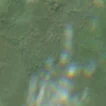
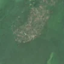

18,7 ha de pădure schimbată lângă Zăbalț
Între vara lui 2025 și 17 aprilie 2026, pe aproximativ 18,7 ha de pădure din comuna Bârzava, lângă Zăbalț, județul Arad, imaginile Sentinel-2 arată că vegetația a dispărut sau s-a schimbat puternic. În registrul public există o autorizație de tăiere pentru acest loc.
Autorizația de tăiere
cu autorizație
Parcela autorizată acoperă zona, iar autorizația era valabilă când s-a tăiat.
Ce se vede în poze: În poza detaliată zona marcată era acoperită de pădure deasă, iar în poza «după» apare o suprafață deschisă, de culoare deschisă, cu pământ și resturi de lemn, în timp ce pădurea din jur rămâne verde. Aceasta arată că arborii au fost tăiați pe o suprafață mare.


Înainte și după: Copernicus Sentinel-2, 10 m pe pixel, conturul zonei cu portocaliu. Poza detaliată (Esri World Imagery) e de acum 1–4 ani: arată ce era acolo înainte, nu tăierea.
Pe scurt
- Identificator
- 20260417_46037_21965
- Locul
- Zăbalț, comuna Bârzava, județul Arad (SIRUTA 10104)
- Coordonate (centru)
- 46.03701, 21.96540 · Google Maps · OpenStreetMap
- Suprafața
- 18,7 ha (din pixeli de 10 m; ± câțiva pixeli pe margine)
- Pădurea întreagă
- în vara lui 2025 (de atunci, nori sau iarnă)
- Prima imagine cu schimbarea
- 17 aprilie 2026
- Imagini în care se vede schimbarea
- 13
- Cât de sigur e semnalul din satelit
- medie
- Autorizația cea mai apropiată
- APV 2502632201690 · Ocolul Silvic Piatra Cerbului R.A., valabilă 24 noiembrie 2025 – 10 martie 2026, la 0 m de zonă
- Terenul
- în afara amenajamentelor silvice publicate (pășune, mal de apă sau pădure privată fără amenajament în registru)
- Arie protejată
- Defileul Mureșului Inferior - Dealurile Lipovei
- Pădure pierdută în jur, alți ani
- 2016 (Hansen)
- Garda Forestieră
- Oradea
Dacă vrei să verifici sau să sesizezi
- Pădurile din județul Arad sunt în grija Gărzii Forestiere Oradea, care controlează tăierile și dă amenzile.
- Autorizația găsită în zonă e emisă de Ocolul Silvic Piatra Cerbului R.A..
- Formularul Gărzii Forestiere Naționale primește sesizări și fără nume. Trimite linkul acestei pagini, coordonatele și pozele. Dacă tăierea e în desfășurare, sună la 112.
- Autorizațiile și transporturile de lemn se pot căuta în Inspectorul Pădurii.
Pagina arată ce se vede din satelit și ce scrie în registrul public; nu e o dovadă în sine.
Cum citezi zona
Linkul acestei pagini nu se schimbă. Dacă zona iese vreodată de pe hartă, pagina rămâne, cu data și cu ce știam despre ea.
Pădurea RO, zona 20260417_46037_21965: 18,7 ha, Zăbalț, comuna Bârzava, județul Arad; schimbare văzută din satelit între vara lui 2025 și 17 aprilie 2026. https://iliemihai.github.io/padurea-ro/zona/20260417_46037_21965/ (consultat la [data]). Date: CC BY 4.0.
Datele zonei: GeoJSON · toate zonele: date deschise · licența CC BY 4.0.
Istoricul zonei pe hartă
Starea se poate schimba când registrul publică o autorizație sau când analistul vede poze mai bune. O ținem aici, ca un link citat să arate și ce spuneam atunci.
Pe hartă cel târziu din 5 noiembrie 2026.
- 5 noiembrie 2026 – azi · cu autorizație
Detalii tehnice, pentru verificare
De ce acest nivel de încredere:
- văzută schimbată în 13 imagini diferite
- peste 3 ha
- pădurea din jur e neschimbată
- ultima dată am văzut-o intactă în vara lui 2025 (de atunci, nori sau zăpadă)
- fără părerea AI
Ce a văzut analistul cu context: DETAILED BEFORE (2024) arată coronament închis pe tot conturul; în AFTER (2026-06-29, plin sezon de vegetație) apare un petic ovoidal de sol dezgolit și resturi de exploatare, cu margini destul de clare, iar în imaginea largă pădurea din jur rămâne verde, deci nu este efect de sezon. Nu există bandă continuă dincolo de contur, drum sau formă geometrică (nu e șantier), iar tonul e bej, nu negru (nu e foc); WorldCover 100% copaci și coronament 93% susțin pădure închisă, iar autorizația APV are suprapunere 0% (neacoperit), dar ușoara textură pestriță poate indica și resturi de arbori rămași.
- Placa Sentinel-2
- 34TER
- NDVI de referință
- 0.85
- NBR de referință
- 0.61
- Scăderea în pădurea din jur
- 0.04
- Persistență
- 0.92
- NDVI / NBR după
- 0.509 / 0.173
- Analistul cu context (model)
- taiere_rasa · 0.72
Cum se calculează fiecare: metodologia.
Pune harta zonei într-un articol
Copiază codul în articol (merge în majoritatea site-urilor de știri). Sau pune doar linkul: WhatsApp, Facebook și X arată singure poza zonei.